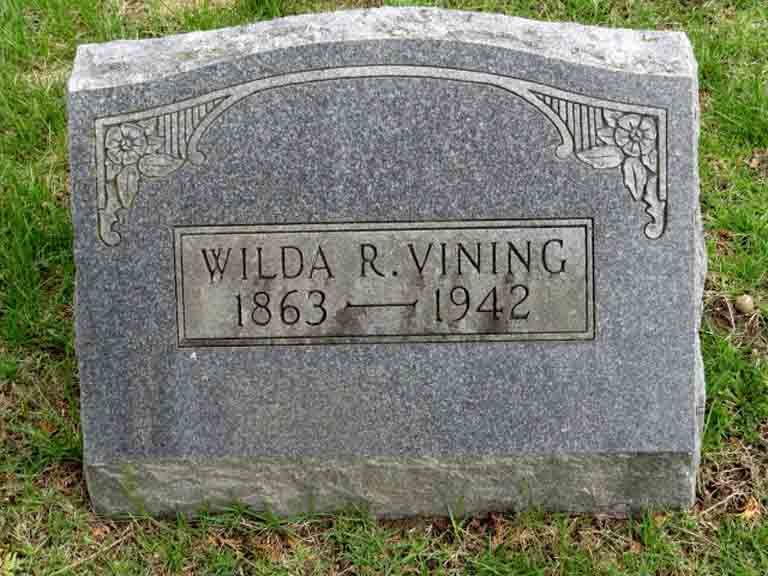

Census Data
| 1890 | 1900 | 1910 | 1920 | 1930 | 1940 | |
| Joseph Easton Vining | ? | 41 | 51 | 60 | dead | |
| Alwilda (Russell) Vining | ? | 38 | 48 | ? | 68 | ? |
| Mary Leo (Bartlett) (Pelham) Vining | 47 | ? | ? | |||
| Fern Vining | ? | 11 | [living? in separate household] | |||
| Neva Belle Vining | 8 | 19 | [living? in separate household] | |||
| Wilbur Dale Vining | 6 | 16 | married and living in separate household | |||
| Glenn Russell Vining | 2 | 12 | married and living in separate household |


Death Data
Gravestones for Joseph Easton Vining and Alwilda (Russell) Vining, in Oak Grove Cemetery, Napoleon, Jackson County, Michigan (from Find A Grave):